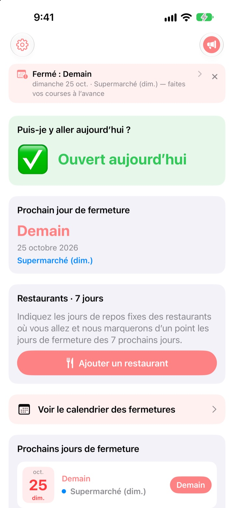
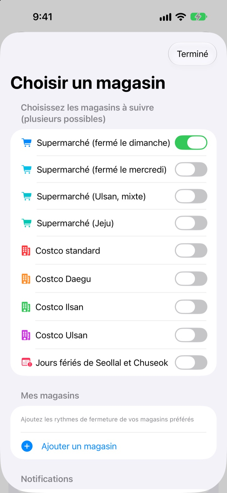
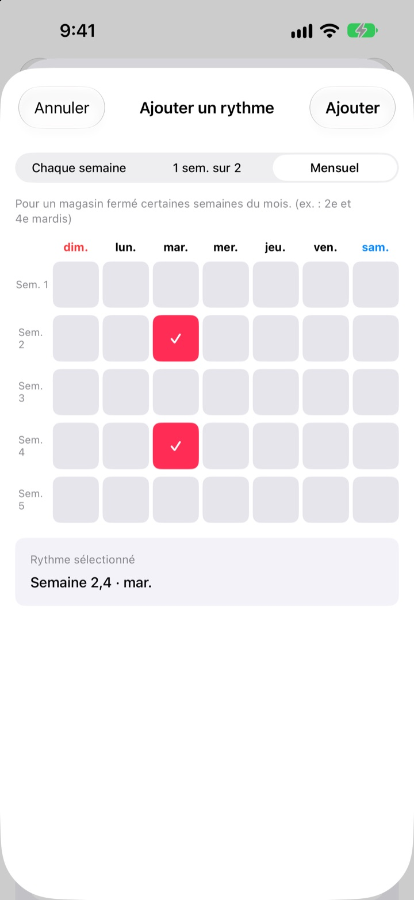
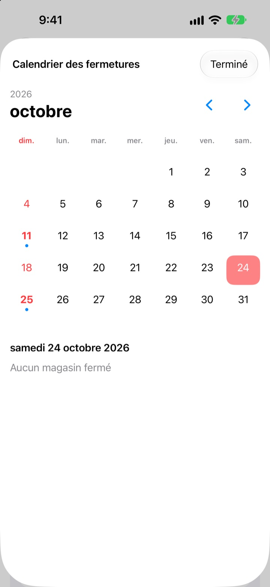
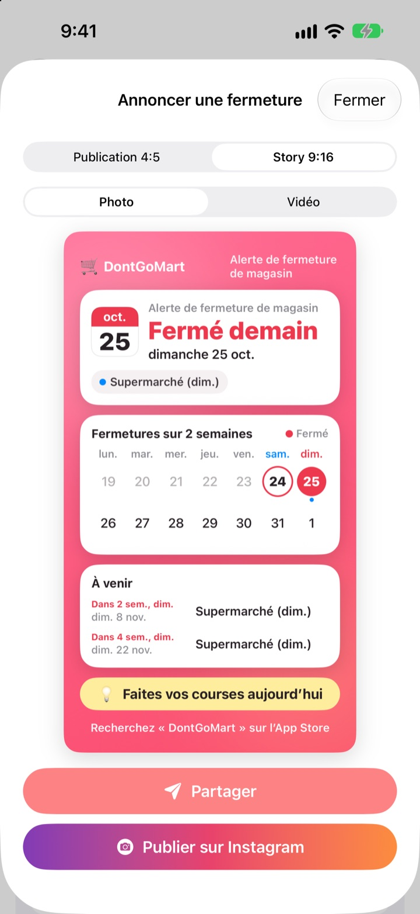

Avant d’aller faire les courses,
vérifiez que c’est ouvert
En ouvrant l’app, vous voyez d’abord si vos magasins sont ouverts aujourd’hui. Un rappel arrive avant chaque fermeture, pour ne plus tomber sur une porte close.
Toutes les fonctions sont gratuites. Sans compte ni publicité.

Essayez avec votre magasin
Choisissez un magasin pour voir tout de suite s’il est ouvert aujourd’hui et quand il ferme la prochaine fois. Le calcul suit les mêmes règles que l’app.
Déjà arrivé liste de courses en main devant un magasin fermé ?
En Corée, les hypermarchés doivent fermer deux jours par mois, mais lesquels dépend de l’endroit. Le plus souvent le 2e et le 4e dimanche, ailleurs le mercredi, et Ulsan et Jeju ont leurs propres règles. Chez Costco, tout dépend de l’entrepôt. DontGoMart calcule les fermetures selon les règles de vos magasins et vous dit d’abord si vous pouvez y aller aujourd’hui.
Juste pour chaque région
Choisissez des magasins fermés le dimanche ou le mercredi, ou des régions au calendrier propre comme Ulsan et Jeju. Les entrepôts Costco standard et ceux de Daegu, Ilsan et Ulsan se règlent séparément.
Les fermetures du jour de Seollal et de Chuseok apparaissent aussi, et vous pouvez suivre plusieurs magasins à la fois.

Votre magasin de quartier et vos restaurants préférés
Si un magasin manque, ajoutez-le vous-même : chaque semaine, une semaine sur deux, ou quelles semaines du mois et quel jour il ferme.
Pour un restaurant, collez un lien partagé depuis Naver Map ou choisissez une capture de sa fiche, et les jours de repos se remplissent tout seuls. Le texte des photos est lu uniquement sur votre appareil.

Rappels et widgets pour ne rien oublier
Recevez un rappel 1, 2, 3 ou 7 jours avant, à l’heure de votre choix, et un autre la veille pour dire qu’aujourd’hui est le bon jour pour faire les courses.
Les widgets de l’écran d’accueil et de l’écran verrouillé affichent la prochaine fermeture, l’ouverture de ce dimanche et les sept prochains jours de vos restaurants. Le calendrier montre tout un mois.

Partagez-le en une carte
Transformez l’info en carte avec un calendrier sur deux semaines et un conseil d’achat, et envoyez-la au groupe familial. Formats publication et story Instagram, et courte vidéo.

Trois étapes pour commencer
- 1
Choisissez vos magasins
Activez les magasins et régions où vous faites vos courses. Autant que vous voulez.
- 2
Activez les rappels
Choisissez combien de jours avant et à quelle heure.
- 3
Ajoutez un widget
Consultez depuis l’écran d’accueil ou verrouillé sans ouvrir l’app.
Règles de fermeture par magasin
- Supermarché (fermé le dimanche)
- 2e et 4e dimanche · la plupart des régions
- Supermarché (fermé le mercredi)
- 2e et 4e mercredi · une partie du Gyeonggi, Cheongju
- Supermarché (Ulsan)
- 2e mercredi, 4e dimanche
- Supermarché (Jeju)
- 2e vendredi, 4e samedi
- Costco standard
- 2e et 4e dimanche
- Costco Daegu
- 2e et 4e lundi · Daegu, Daegu Innovation
- Costco Ilsan
- 2e et 4e mercredi
- Costco Ulsan
- 2e mercredi, 4e dimanche
- Seollal, Chuseok
- fermé le jour même
Les fermetures obligatoires sont fixées par les collectivités locales et peuvent changer. Si quelque chose ne colle pas, écrivez-nous à l’adresse ci-dessous.
Questions fréquentes
Les jours de fermeture ne correspondent pas.
Les fermetures obligatoires dépendent d’arrêtés locaux et varient selon la région. Vérifiez dans Réglages que vous avez choisi le bon type de magasin (fermé le dimanche, le mercredi, Ulsan, Jeju, etc.). Si ça ne correspond toujours pas, envoyez-nous le nom du magasin et le quartier, nous vérifierons.
Mon magasin n’est pas dans la liste.
Ajoutez-le comme magasin personnel. Choisissez chaque semaine, une semaine sur deux, ou quelles semaines du mois et quel jour il ferme, par exemple le 2e et le 4e dimanche.
Les jours de repos d’un restaurant sont mal remplis.
Pour un import via un lien Naver Map, la fiche du restaurant doit indiquer ses jours de repos. Avec une capture, assurez-vous que la mention de fermeture est visible à l’écran. Vous pouvez corriger avant d’enregistrer.
Je ne reçois pas les rappels.
Vérifiez que les notifications sont autorisées dans Réglages > Notifications > DontGoMart et que les rappels sont activés dans l’app.
Le widget ne se met pas à jour.
Ouvrir l’app une fois actualise les widgets. Sinon, supprimez le widget et ajoutez-le de nouveau.
C’est quoi, les pourboires ?
Toutes les fonctions de DontGoMart sont gratuites. Les pourboires café, gâteau et repas servent à soutenir le développeur. Ensuite, vous recevez un merci et un badge indiquant combien de fois vous avez donné.
À qui m’adresser pour un paiement ou un remboursement ?
Apple gère les achats intégrés : demandez un remboursement sur reportaproblem.apple.com. Pour le reste, écrivez-nous.
Comment mes données sont-elles traitées ?
Pas de compte, pas de publicité, pas d’outil de suivi, et le texte des captures est lu uniquement sur votre appareil. Détails dans la politique de confidentialité ci-dessous.
Une question, une idée ? Écrivez à hyunho.lee.1993@gmail.com. Réponse en général sous un ou deux jours.